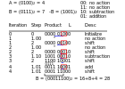
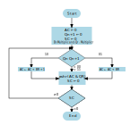

Multiplikation und Division
Multiplikationsoperationen können auf sehr unterschiedliche Weise implementiert werden : Langsam, als serielle Operation, gesteuert durch ein Mikroprogramm oder schnell in dedizierter Hardware.
Die Division ist eine komplexere Operation und wird daher in einem anderen Beitrag behandelt. Auch für die Multiplikation legen wir den Umfang auf vorzeichenlose Ganzzahlen fest.
Links- und Rechtsverschiebung
Für Multiplikatoren, die Zweierpotenzen sind, ist die Operation sehr einfach und kann durch eine Linksverschiebung implementiert werden.
Eine Linksverschiebung um ein Bit entspricht einer Multiplikation mit 2, da eine Linksverschiebung um n Bits einer Multiplikation mit 2^n entspricht.
Eine Rechtsverschiebung ist eine Division durch 2, eine Rechtsverschiebung um n Bits ist eine Division durch 2^n
Der Multiplikationsalgorithmus
Natürlich sind wir nicht nur an dem Spezialfall von Multiplizierern zur Basis 2 interessiert, sondern wollen, dass die Multiplikationsoperation auf alle oben definierten Zahlen anwendbar ist. Wir beginnen mit einer seriellen Multiplikationsimplementierung.
Zunächst analysieren wir die Schritte einer binären Multiplikation, die sich offen gesagt nicht wesentlich von einer Multiplikation im Dezimalsystem unterscheidet und sogar noch einfacher ist. Wir multiplizieren 7 mal 6 im Binärsystem, was 42 ergibt.
Multiplikand x Multiplikator = Produkt
\[ \begin{aligned} 0111_2 \times 0110_2 \\ \hline 0000 \\ 011110 \\ 011100 \\ 0111000 \\ \hline 0101010 \\ \end{aligned} \]
Wie wir anhand dieses Beispiels sehen können, ist die Multiplikation eine Abfolge von Verschiebung und Addition. Daraus können wir nun die Multiplikation zerlegen und daraus einen Algorithmus ableiten.
Für Details verweisen wir auf die Originalquelle: Rechnerentwurf: Rechenwerke, Mikroprogrammierung, RISC von R. Hoffman, dritte Auflage, Oldenbourg Verlag.
Wir haben einen Multiplikator von X[n] und einen Multiplikator von Y[m], dann ergibt das Produkt der Multiplikationsoperation P[n+m], was bedeutet, dass die Größe der Operation logischerweise die Addition der Größe des Multiplikators und des Multiplikators ist.
Booth-Algorithmus
Der Booth-Algorithmus ist einer der effizientesten Algorithmen, da er, wie oben erwähnt, wiederum aus einer Reihe von Verschiebungen und Additionen besteht. Hier müssen jedoch die drei folgenden Regeln beachtet werden (siehe hier als Referenz): 1. Der Multiplikand wird vom Teilprodukt abgezogen, sobald die erste niedrigstwertige 1 in einer Folge von 1en im Multiplikator auftritt 2. Der Multiplikand wird zum Teilprodukt addiert, sobald die erste 0 (vorausgesetzt, es gab eine vorherige „1“) in einer Folge von 0en im Multiplikator auftritt. 3. Das Teilprodukt ändert sich nicht, wenn das Multiplikatorbit mit dem vorherigen Multiplikatorbit identisch ist.
Der angewandte Booth-Algorithmus kann unter hier eingesehen werden: 
Implementierung der Hardware des Booth-Algorithmus und Flussdiagramm
Der unten dargestellte Booth-Multiplikator besteht aus den Registern A, B für den Multiplikator und den Multiplikanden und Q für das Ergebnis. Das Register AC ist der Akkumulator, das Bitregister BR und das Register QR. Ein zusätzliches Flipflop Qn+1 wird zur Überprüfung des Multiplikators verwendet. Das Flussdiagramm ist unten dargestellt.

Zunächst werden der Akkumulator und das Flipflop Qn+1 gelöscht und auf Null zurückgesetzt. Der Sequenzzähler SC wird auf die Anzahl der Bits n des Multiplikators gesetzt. Dann werden die beiden Bits in Qn und Qn+1 überprüft. Wenn diese 10 sind , wird der Multiplikand vom Teilprodukt im Akkumulator AC subtrahiert. Sind sie 01, wird der Multiplikand zum Teilprodukt im Akkumulator AC addiert. Sind die beiden Bits gleich (00,11), bleibt das Teilprodukt unverändert. Da die Subtraktion und Addition abwechselnd erfolgen, kann kein Überlauf auftreten. Im nächsten Schritt werden das Teilprodukt und der Multiplikator (plus Qn+1) nach rechts verschoben. Dies ist eine arithmetische Verschiebung (ashr), die AC und QR nach rechts verschiebt, sodass das Vorzeichenbit in AC unverändert bleibt. Der Sequenzzähler wird dekrementiert und die Berechnungsschleife wird n-mal wiederholt. Bei der Multiplikation negativer Zahlen müssen wir das 2er-Komplement finden, da es einfacher ist, zu addieren, als eine binäre Subtraktion durchzuführen.
(translation 2024-12-31)